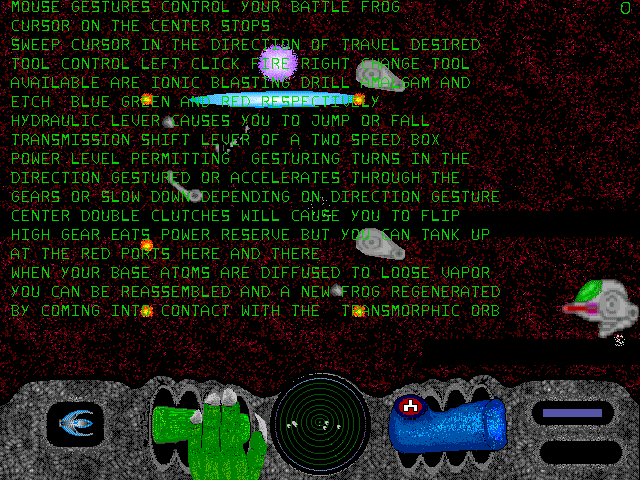

Behold! The Frogs Of War!
This game was created by developer Linus Sphinx based on a bizarre dream he had about lizard men enslaved in a mine on an asteroid, fighting to death during a riot for their chance at an upper management position. He continued working on the game for two decades, making tweaks, updating the graphics, and moving it to new operating systems. It’s hard to follow and alarming, as a dream about lizard wars in an asteroid should be.
The Frogs Of War (read on The Obscuritory)
From the moment the game begins, it feels like a panic attack. The screen is whipping around and changing colors before you even get the chance to figure out where you are. The sound effects playing in the background alternate between strange moaning noises that sound like they’re coming from another room, sudden loud screams, and sirens. The only mood is high-energy chaos, and it never pauses.
It is, of course, based on a recurring dream, a stream of anti-logic that makes perfect sense in the moment but disintegrates when you try to piece it together in another context. And so it happens here too. Everything comes out of a single storm of unconscious imagination that falls apart when it’s given to someone else.
Whoa! Misty De Meo shared that The Frogs Of War source code seems to compile easily on other systems too, so if you want to play it on Macintosh, you can! It doesn’t have any Linux dependencies and only uses SDL.
You can compile it using Homebrew for Macintosh. See the full script here (with specific instructions on the blog): https://github.com/mistydemeo/homebrew-formulae/blob/master/frogs-of-war.rb
Thank you for sharing this!